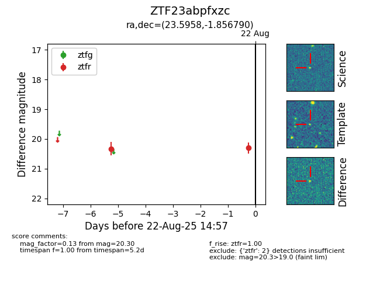

Target ZTF23abpfxzc at 2025-08-22 14:57, see:
FINK: fink-portal.org/ZTF23abpfxzc
Lasair: lasair-ztf.lsst.ac.uk/objects/ZTF23abpfxzc
ALeRCE: alerce.online/object/ZTF23abpfxzc
alt names
ZTF23abpfxzc (ztf,alerce)
coordinates:
equatorial (ra, dec) = (23.5958,-1.85679)
galactic (l, b) = (146.8944,-62.71337)
photometry
last ztfr=20.30
2 ztfr detections
